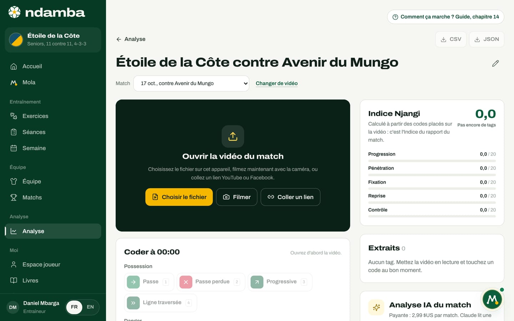
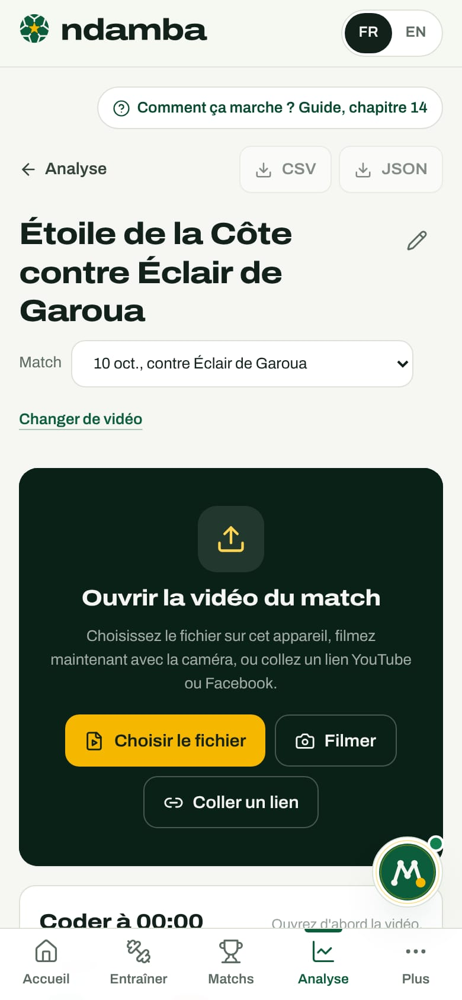
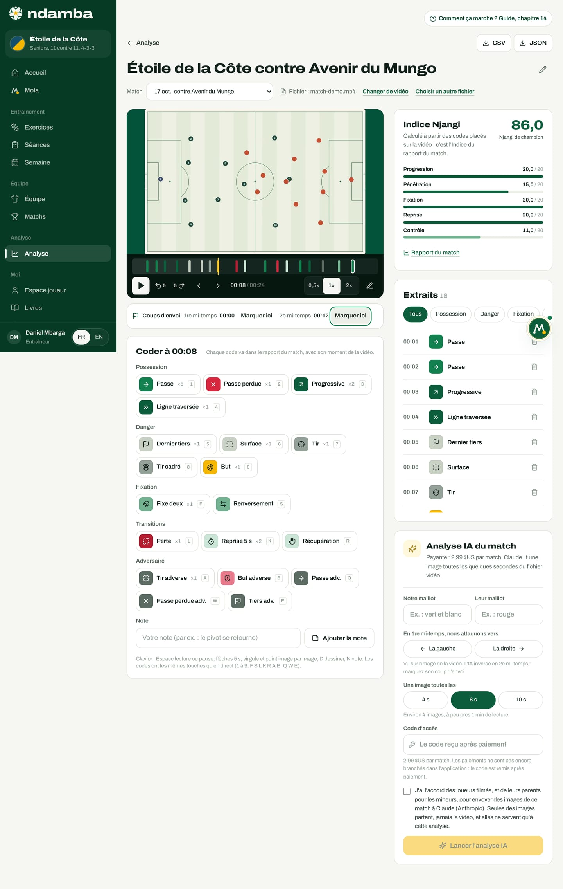
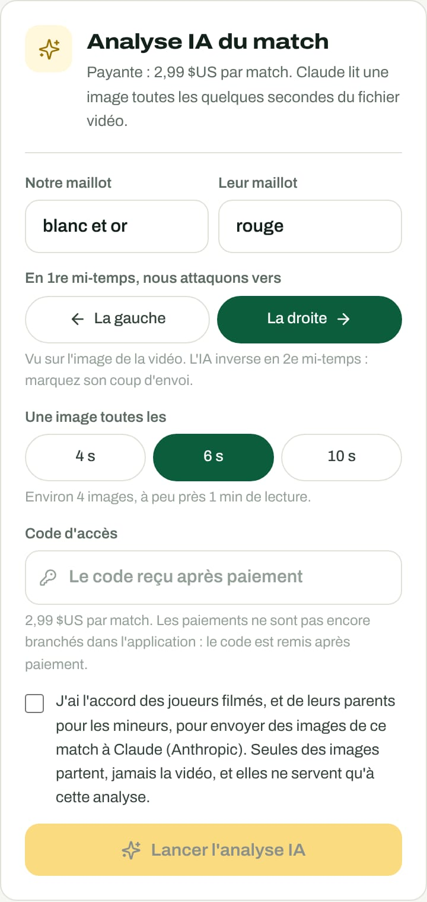
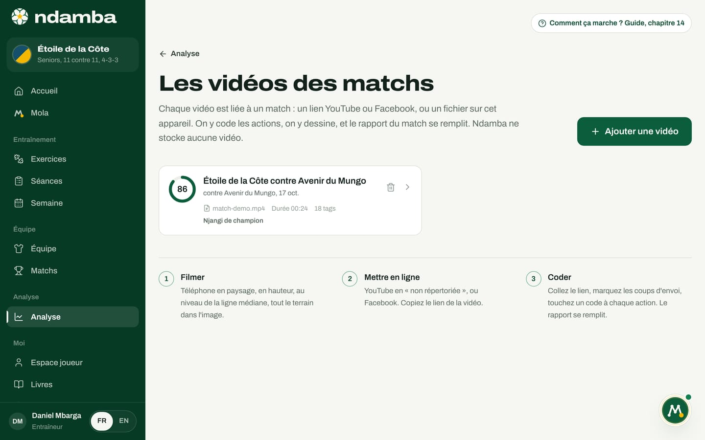

Le studio vidéo, l’analyse IA et la saison
Le studio où l’on code un match sur sa vidéo (lien YouTube ou Facebook, fichier ou caméra du téléphone), les coups d’envoi, la lecture au ralenti, les extraits, le dessin et les exports ; l’analyse IA payante, ce qu’elle lit et ce qu’elle ne fait pas ; puis la page Analyse, qui suit l’Indice Njangi sur toute la saison.
13 min de lecture
Un match raconte une histoire ; une saison raconte une méthode. Entre les deux, il y a la vidéo. C’est sur elle que l’on code le match (chapitre 12), sur elle que l’on montre aux joueurs ce que disent les chiffres, et sur elle que l’analyse IA lit le placement de l’équipe. Ce chapitre ouvre le studio vidéo, explique l’analyse IA sans rien enjoliver, puis remonte à la page Analyse, où un directeur technique voit si le travail de la semaine se retrouve le samedi.
Ouvrir le studio
Le studio s’ouvre de trois façons : depuis la fenêtre Ajouter la vidéo d’un match (chapitre 12), avec Coder la vidéo sur la ligne d’un match dans Analyse, ou depuis la page Les vidéos des matchs. Son adresse est propre à chaque vidéo : on peut la garder en favori.
En haut : le lien Analyse pour revenir, les boutons CSV et JSON (actifs dès le premier code), le titre avec un crayon (Renommer le projet), le Match lié, modifiable à tout moment, l’origine de la vidéo (Vidéo YouTube, Vidéo Facebook ou Fichier : match.mp4) et le lien Changer de vidéo.
Avec un lien, le lecteur officiel de YouTube ou de Facebook s’affiche dans le studio, et la vidéo est prête. Si elle ne peut pas être lue, le studio le dit, « Cette vidéo ne peut pas être lue ici. », et rappelle pourquoi : une vidéo privée ne s’affiche pas, il faut qu’elle soit « non répertoriée » ou publique sur YouTube, publique sur Facebook, et que son intégration soit autorisée.
Avec un fichier, la grande zone sombre dit Ouvrir la vidéo du match et propose trois boutons :
- Choisir le fichier : la vidéo enregistrée sur l’appareil (sur ordinateur, on peut aussi la faire glisser sur la zone) ;
- Filmer : ouvre la caméra du téléphone ; la vidéo filmée s’ouvre aussitôt dans le studio ;
- Coller un lien : passer à une vidéo YouTube ou Facebook.


Le fichier n’est jamais envoyé sur internet, et Ndamba ne le garde pas : à chaque visite, la zone demande « Choisissez à nouveau la vidéo « match.mp4 » », et vos codes se replacent au bon moment. Si le fichier choisi porte un autre nom, un bandeau prévient que les codes seront placés sur cette vidéo. Choisir un autre fichier permet d’en prendre un autre.


Marquer les coups d’envoi
Sous la vidéo, la bande Coups d’envoi porte deux repères : 1re mi-temps et 2e mi-temps. Placez la vidéo sur le coup d’envoi de la première période, touchez Marquer ici ; faites de même au coup d’envoi de la seconde. Le studio rappelle pourquoi : « Placez la vidéo sur le coup d’envoi de chaque mi-temps et touchez « Marquer ici » : les minutes du rapport seront justes. »
Sans repère, Ndamba suppose que la vidéo commence au coup d’envoi. Avec les deux repères, un code placé à 61 minutes de vidéo, dans une seconde période qui a commencé à 55 minutes, devient la 52e minute d’un match en 2 x 45. Si vous marquez un repère après avoir codé, toutes les minutes sont recalculées. Le repère de la seconde période sert aussi à l’analyse IA, qui inverse alors le sens d’attaque.
Lire, ralentir, avancer image par image

Sous l’image : Lecture et Pause ; Reculer de 5 s et Avancer de 5 s ; Image précédente et Image suivante (un vingt-cinquième de seconde) ; le temps ; les vitesses 0,5x, 1x et 2x ; le crayon Dessiner. Au-dessus, la frise porte un trait de couleur pour chaque code et la tête de lecture dorée : touchez-la pour sauter à un moment.
Tout ne marche pas partout, parce que les lecteurs de YouTube et de Facebook ont leurs limites :
| Fichier | YouTube | ||
|---|---|---|---|
| Lecture, pause, sauts de 5 s | oui | oui | oui |
| Vitesses 0,5x et 2x | oui | oui | non |
| Image par image | oui | non | non |
| Dessin sur l’image | oui | non | non |
| Analyse IA | oui | avec le fichier | avec le fichier |
Sur ordinateur, le clavier suffit : « Espace lecture ou pause, flèches 5 s, virgule et point image par image, D dessiner, N note. Les codes ont les mêmes touches qu’en direct (1 à 9, F S L K R A B, Q W E). » Sur téléphone, le lecteur reste collé en haut pendant que vous descendez vers les codes.
Coder au bon moment
La carte des codes a pour titre le temps de la vidéo, Coder à 00:08, et rappelle : « Chaque code va dans le rapport du match, avec son moment de la vidéo. » Ce sont les boutons du chapitre 12, rangés en cinq groupes, plus l’adversaire, chacun avec sa touche et son compteur (« ×5 »). Un message confirme chaque code, par exemple « Passe, 00:12 ».
Les règles sont celles du Code Njangi : un But ajoute Tir et Tir cadré ; une Récupération dans les 5 secondes de vidéo qui suivent une Perte ou une Passe perdue devient une Reprise 5 s. Sous les codes, le champ Note accepte une phrase libre (« le pivot se retourne ») avec Ajouter la note. Les notes restent dans le studio ; elles ne vont pas dans le rapport.
La bonne méthode : laissez jouer, touchez le code au moment de l’action ; si l’action est confuse, mettez en pause, reculez de 5 secondes, passez à 0,5x. Codez d’abord une mi-temps entière avec les boutons de base, puis repassez pour la fixation et l’adversaire.


À droite, la carte Indice Njangi : « Calculé à partir des codes placés sur la vidéo : c’est l’Indice du rapport du match. » Elle se met à jour à chaque code, avec le lien Rapport du match. Sur la capture, l’Indice vaut 86,0 après une vingtaine de codes sur 24 secondes de démonstration : il ne veut rien dire. Un Indice prend son sens sur un match entier.
Les extraits
La carte Extraits liste chaque code dans l’ordre de la vidéo : le temps, l’icône du code, son nom, les codes ajoutés automatiquement (« + Tir, Tir cadré »), la note, la vignette de l’image annotée, et la corbeille Supprimer ce tag. Touchez un extrait : la vidéo repart 4 secondes avant, pour qu’on voie l’action se construire. Des pastilles filtrent par groupe : Tous, Possession, Danger, Fixation, Transitions, Adversaire, Note.
Un extrait est un moment marqué, pas un fichier découpé. Pour la séance vidéo avec les joueurs, on rejoue les extraits depuis cette liste. Cinq extraits bien choisis valent mieux qu’un match entier.
Dessiner sur l’image
Le dessin marche sur un fichier (les lecteurs de YouTube et de Facebook ne laissent pas capturer leur image).
- Touchez le crayon Dessiner (ou D). La vidéo se met en pause.
- Choisissez Flèche, Cercle ou Main levée, et la couleur, Or, Blanc ou Rouge.
- Tracez avec le doigt ou la souris. Annuler le trait, Rétablir le trait et Effacer corrigent.
- Enregistrer l’image fond l’image et le dessin en une vignette, attachée au code sélectionné ou à une nouvelle note à ce moment : « Image enregistrée sur le tag à 00:12 ».
Touchez la vignette pour l’agrandir : Télécharger l’image l’enregistre en JPEG, Retirer l’image la détache, Aller à l’extrait rejoue le moment.
Changer de vidéo, de match, exporter
Changer de vidéo remplace le lien (ou passe d’un fichier à un lien) sans toucher aux codes. Le menu Match change le match lié : les codes suivent, et le rapport de l’ancien match se vide. Un match déjà lié à une autre vidéo est grisé.
Les boutons du haut téléchargent le travail sur l’appareil, sans rien envoyer : CSV, une ligne par code, pour un tableur ; JSON, le projet complet, l’Indice, les codes, les images et le résultat de l’analyse IA s’il existe. C’est le format à garder ou à transmettre à un analyste.
L’analyse IA du match
Sous les extraits, la carte Analyse IA du match annonce la couleur : « Payante : 2,99 $US par match. Claude lit une image toutes les quelques secondes du fichier vidéo. »


Ce qu’elle lit. Claude, l’IA d’Anthropic, ne regarde pas la vidéo en continu. Le navigateur prend une image du fichier toutes les 4, 6 ou 10 secondes, la réduit à 960 pixels de large, et envoie ces images par paquets de douze. Pour chaque image, Claude dit qui a le ballon (nous, eux, ballon disputé, arrêt de jeu, ou illisible), dans quel tiers il se trouve, la hauteur de notre bloc quand l’adversaire a le ballon, et combien de nos joueurs sont derrière le ballon quand nous l’avons. Une image floue ou mal cadrée est déclarée illisible plutôt que devinée.
Ce qu’elle rend. Quand les images sont lues :
- la Possession (estimée), sur les images où le ballon est à quelqu’un ;
- Où était le ballon : la part du temps dans Notre tiers, au Milieu et dans Leur tiers ;
- la hauteur de Notre bloc sans le ballon : haut, médian, bas ;
- les Joueurs derrière le ballon en moyenne, et la part des images où la Défense de repos 3 + 2 est respectée (au moins cinq joueurs derrière le ballon quand nous attaquons) ;
- les Moments à revoir, une vingtaine au plus, par exemple « Seulement 2 joueurs derrière le ballon » : touchez-en un, la vidéo repart juste avant ;
- un court résumé écrit, dans la langue de l’application.
Ce qu’elle ne fait pas. Elle ne compte pas les passes, les pertes ni les tirs : des images toutes les 6 secondes ne voient pas chaque action. Elle ne reconnaît pas les joueurs. Elle ne touche pas à l’Indice Njangi, qui vient toujours du codage. La carte le rappelle sous les résultats : « Estimations faites sur des images, pas un comptage de chaque action : vérifiez sur la vidéo. »
Pourquoi un fichier, et pas le lien ? YouTube et Facebook ne permettent pas de télécharger leurs vidéos, et leurs lecteurs ne laissent pas copier leurs images. L’IA lit donc le fichier, ouvert sur l’appareil : la vidéo d’origine du téléphone, ou celle que vous récupérez dans YouTube Studio. Pour une vidéo en lien, la carte propose Ouvrir le fichier du match ; le fichier ouvert sert à l’IA, la lecture continue sur le lien.
Les réglages.
- Notre maillot et Leur maillot : des couleurs simples, « blanc et or », « rouge ». C’est ainsi que Claude distingue les équipes.
- En 1re mi-temps, nous attaquons vers : La gauche ou La droite, vu sur l’image de la vidéo. Marquez le coup d’envoi de la seconde mi-temps : l’IA inverse le sens à partir de là.
- Une image toutes les 4 s, 6 s ou 10 s. Six secondes est le bon compromis ; la carte estime le nombre d’images et la durée de lecture, par exemple « Environ 900 images, à peu près 26 min de lecture. »
- Code d’accès : « Le code reçu après paiement ». Les paiements ne sont pas encore branchés dans l’application : le code est remis après paiement.
- La case d’accord : « J’ai l’accord des joueurs filmés, et de leurs parents pour les mineurs, pour envoyer des images de ce match à Claude (Anthropic). Seules des images partent, jamais la vidéo, et elles ne servent qu’à cette analyse. » Sans elle, rien ne part.
Lancer l’analyse IA démarre la lecture. Une barre montre l’avancement ; « Gardez cette page ouverte. Ce qui est lu est enregistré : vous pourrez reprendre. » Arrêter interrompt ; Reprendre l’analyse repart où elle s’était arrêtée, sans relire les images déjà lues. Si le réseau tombe, rien n’est perdu. Relancer l’analyse recommence avec d’autres réglages.
Ce que ça coûte. Une image de 960 x 540 pixels représente environ 700 jetons pour Claude. À une image toutes les 6 secondes, un match de 90 minutes fait environ 900 images, soit à peu près 630 000 jetons d’entrée : autour de 2,5 $US au tarif public d’Opus 5.5 (4 $US par million de jetons d’entrée), plus la réponse. Le prix de 2,99 $US par match est une proposition qui couvre ce coût ; il reste à confirmer.
Les vidéos des matchs


Depuis Analyse, Toutes les vidéos ouvre Les vidéos des matchs : « Chaque vidéo est liée à un match : un lien YouTube ou Facebook, ou un fichier sur cet appareil. On y code les actions, on y dessine, et le rapport du match se remplit. Ndamba ne stocke aucune vidéo. » Chaque carte montre le cadran de l’Indice, le titre, le match, l’origine, la durée, les codes et la pastille IA si l’analyse a tourné. Toute la carte ouvre le studio. Supprimer le projet demande confirmation, « Supprimer ce projet et ses tags ? » ; la vidéo elle-même, sur YouTube, Facebook ou l’appareil, n’est pas touchée. Le bouton Ajouter une vidéo ouvre la fenêtre du chapitre 12.
La page Analyse : la saison d’un coup d’œil
Dans le menu, groupe Analyse, touchez Analyse ; sur téléphone, c’est l’onglet Analyse de la barre du bas. Le sous-titre dit tout : « Analyser un match, c’est coder chaque action sur sa vidéo : passe, perte, reprise, tir. Ndamba en tire l’Indice Njangi, le rapport du match et la saison. » Puis vient l’encadré Comment l’analyse fonctionne (chapitre 12).

Matchs à analyser
Les matchs à venir. Le premier occupe une carte sombre, Prochain match, avec les boutons Ajouter la vidéo et En direct, sans vidéo, et ce conseil : « Le mieux : filmez le match, mettez la vidéo sur YouTube ou Facebook, puis codez-la ici à votre rythme. Sans vidéo, codez en direct depuis la touche. » Les suivants viennent en lignes, avec les mêmes boutons. Un match prévu dont la date est passée porte la pastille Date passée. Le lien Nouveau match en crée un (chapitre 11).
Sur les formules Gratuit et Joueur Premium, un seul match peut être analysé. Au-delà, la carte annonce « L’analyse illimitée est dans Coach Pro » et le bouton devient Voir les offres. Les paiements ne sont pas encore branchés : l’activation d’une offre est une démonstration (chapitre 24).
Matchs analysés
Chaque match codé, du plus récent au plus ancien : un cadran avec l’Indice arrondi, l’adversaire, la date, la bande (Njangi solide), le nombre de codes, l’étiquette sur vidéo ou en direct, le score et la pastille Victoire, Nul ou Défaite. Touchez une ligne pour ouvrir le rapport (chapitre 13). Les matchs joués sans aucun code suivent, chacun avec Ajouter la vidéo : un match se code après coup, le lendemain ou la semaine suivante.
L’Indice au fil des matchs
La carte L’Indice au fil des matchs dessine la courbe de la saison. Avec un seul match analysé, elle montre son cadran et prévient : « La courbe apparaît dès le deuxième match analysé. » À partir de deux, une ligne de 0 à 100, les seuils 35, 50, 65 et 80 en repère, un point par match ; touchez un point pour ouvrir le rapport.
La saison, sous-indice par sous-indice
La saison, sous-indice par sous-indice donne l’Indice de la saison en grand (67,9 dans la démo club pro, Njangi solide) et les cinq barres. La règle de la méthode est rappelée : « Les codes sont additionnés, puis l’Indice est calculé : jamais la moyenne des matchs. » Un match codé en entier pèse donc plus qu’un match codé à moitié, ce qui est juste : il contient plus de jeu observé.
L’Indice en deux phrases, et les vidéos
L’Indice Njangi, en deux phrases rappelle l’idée de départ, « Le pourcentage de possession ment : une équipe peut avoir le ballon sans jamais aller nulle part. », avec le lien Lire Le Code Njangi, chapitre 32. La carte Les vidéos des matchs donne le nombre de vidéos, Ajouter une vidéo et Toutes les vidéos.
Si aucune équipe n’existe encore, la page demande d’abord Créez d’abord votre équipe : un Nom de l’équipe, une Catégorie, un Format, puis Créer l’équipe.